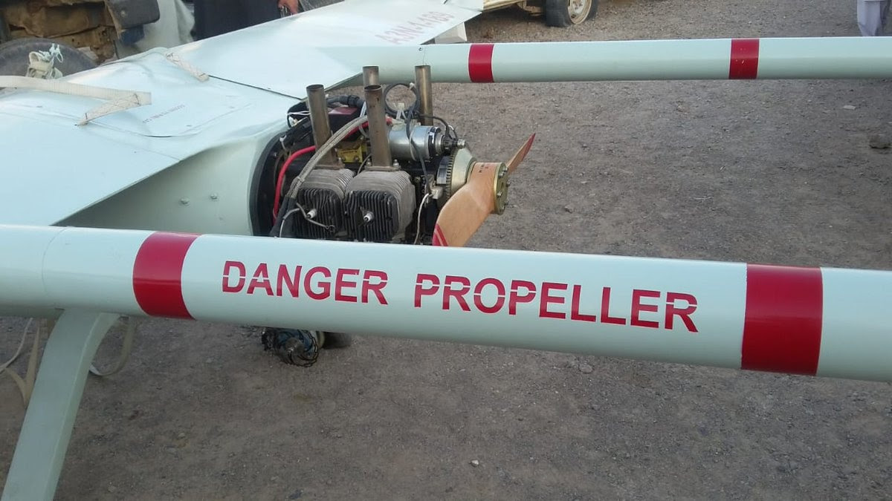

An Iranian drone was captured by Pakistan which violated the air-space. Here’s what we know so far.
Allegedly on the 20th of July, a surveillance drone ‘Mohajer - IV’ of Islamic Revolution Guards Corps (IRGC) Iran was apprehended by Pakistani authorities namely Frontier Constabulary, Baluchistan and Levies Baluchistan, both the institute which has a mandate to patrol Pak-Iran international border.
Drone being carried by a Pakistani border patrol vehicle.
The event is said to have occurred after the Pakistani radar systems detected the drone. What remains un-verified to this point is how this drone was Jammed, either the Pakistan Air Defense system was used or it can also be argued regarding the presence of US Navy and Air Force might have played a role.
Opening of the parachute from its propeller side, which saved the drone from crash landing.
Allegedly the drone roamed around the given area after the Iranians lost control, and its’ parachute was opened when it was close to an empty fuel tank. The drone was than later up picked by the Pakistani border authorities.
Via Google Maps.
Both Iran and Pakistan share a 909 K/m long border. The border is mutually and diplomatically accepted by both sides. Pakistan has also started fencing 700 k/m length of the border which it deems to be crucial point where cross border terrorist movement happens. The aim of the fence is to stop the unnecessary border crossing and smuggling.
Both sides have not said a single word so far about the incident.
Also Read: How Pakistanis reacted to Imran-Trump meeting might blow you away!